There may be situations where clinicians are busy with meetings outside of appointments during their normal working schedule. To provide visibility of these other scheduled activities, you can create meetings and add clinicians, and non-medical staff as attendees.
This helps to:
This article outlines:
The process for booking a meeting via the Calendar is explained step-by-step in the article ‘Booking & managing online meetings’. Although in that context the meeting is ‘online’, the booking steps are very similar.
To complement that explanation, the short video below provides a demonstration of what you can do to book a meeting using the Calendar.
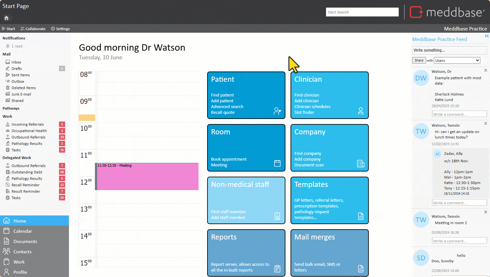
To do this:
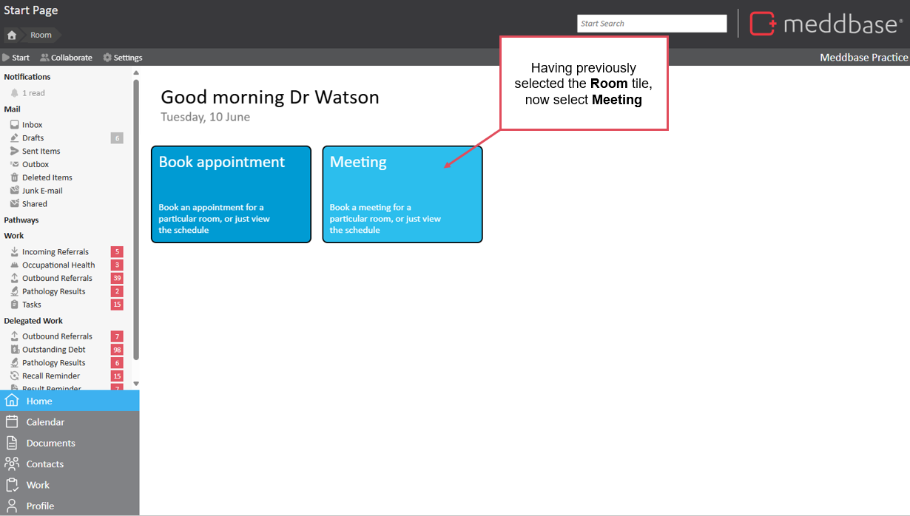
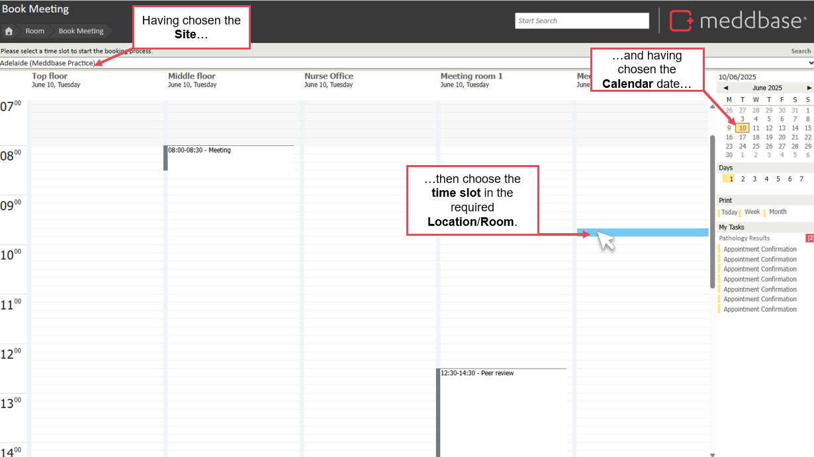
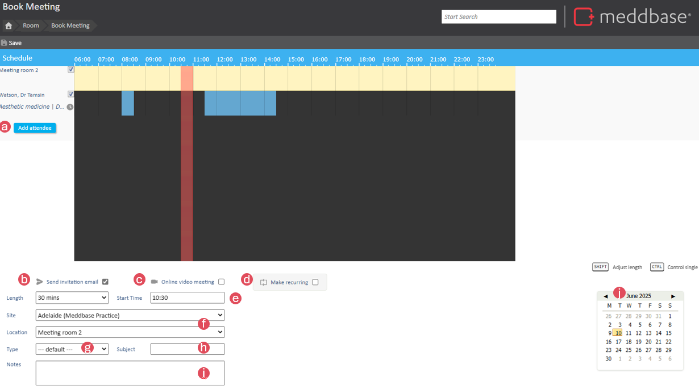
The meeting is created, added to the diary for each attendee. It will also appear in the schedule when booking further meetings.
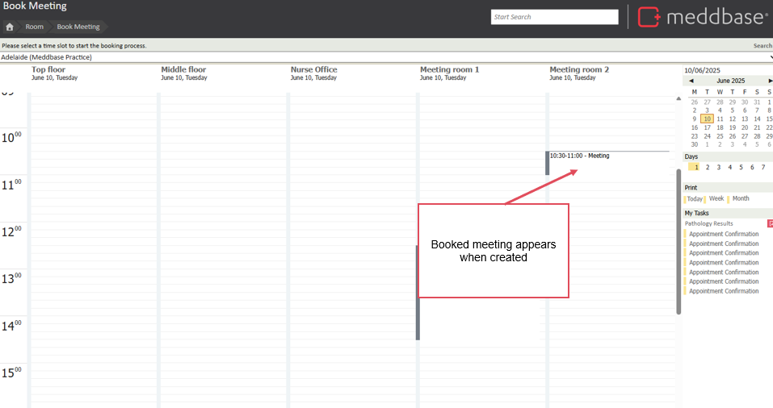
Often, meetings need to be rescheduled or cancelled. For recurring meetings, it is important to be able to modify instances or delete future meetings. This is easily managed from within the meeting page.
Please note: To be able to modify or delete a meeting from a clinician's diary, you will need to be an admin of the meeting. By default, the only admin is the person that has created the meeting. This default can be changed in Admin > Config > Appointments.
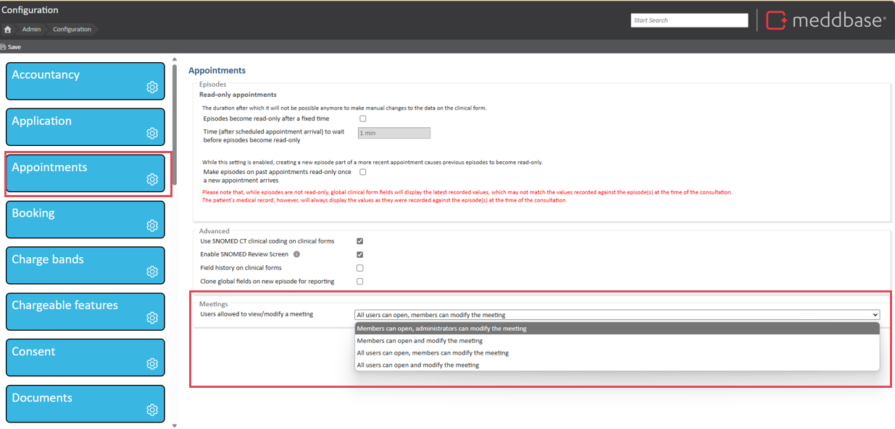
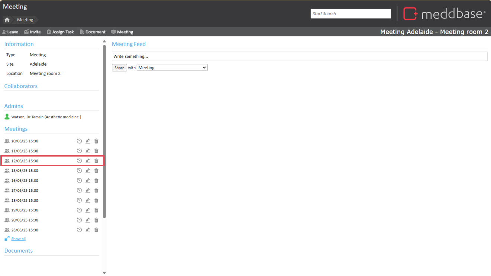
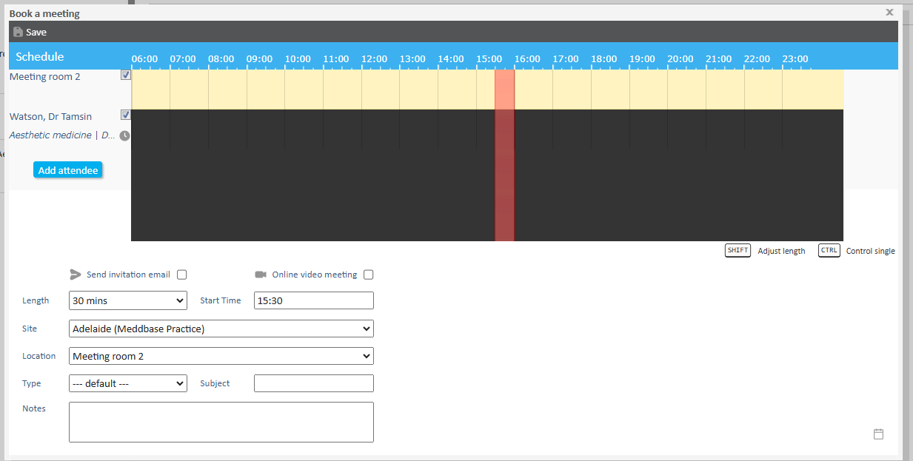
To cancel/delete meetings on mass,
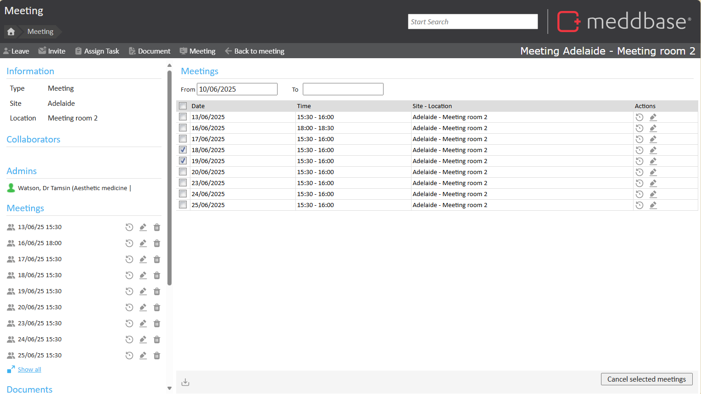
When viewing a booked meeting you can see:
You can also
Further information about these features are set out in the article ‘booking and managing online meetings’.
In the context of meetings and diary availability, there are a few ‘what ifs’ you may have. We address some common ones in the sub-sections below.
In this situation, viewing the schedule for a Room won’t help you find anything out about the meeting. Alternatively, you can find some detail from your calendar as follows:
By doing so, you can see information about meeting attendees, documents or comments added to the feed. The video below provides a short walk-through of how to do this.
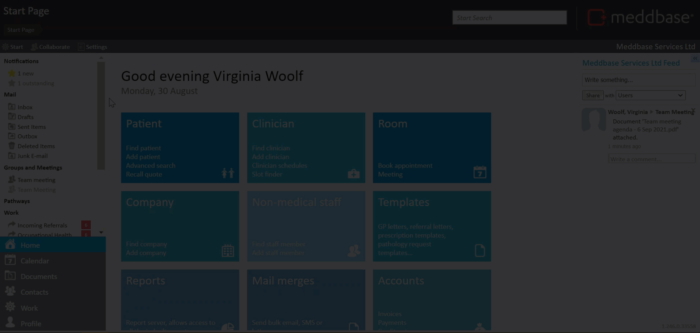
If you are looking to check this before making a booking you can do as follows:
You are then presented with a list of their scheduled availability and booked slots.
It is possible to check room/location availability before you start to book a meeting. To do this:
You are then presented with a side-by-side schedule for that day of rooms registered on your system. Any appointments and meetings recorded as using these room are displayed. Also their allocation to clinicians is shown too.
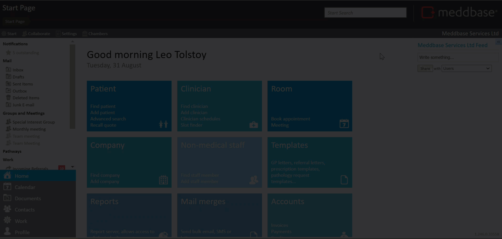
If you are committed during a time in your schedule, for example attending an external meeting or an online CPD session, you can book a meeting to show that it is being used. To do this:
This will then mean that the time is shown as booked in your diary. If a Meddbase user then tries to book an appointment at that time via the Clinician Schedule, it will present a double-booking warning.
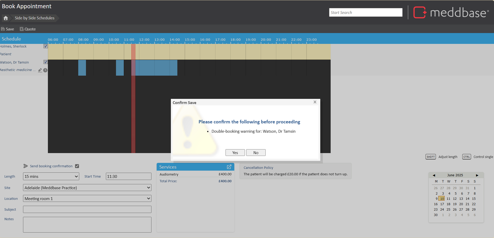
That said, you may prefer to adjust the availability for Scheduling via the Site Scheduler so that the blocked out time is not included in the scheduled time shown as being available for appointments.
You can change the background colour for meetings in the diary. This can help make them stand out from appointments. To do this:
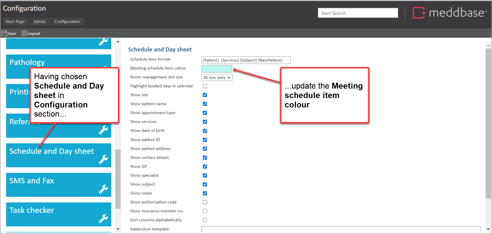
By doing so, when
This background colour is then displayed for meetings.
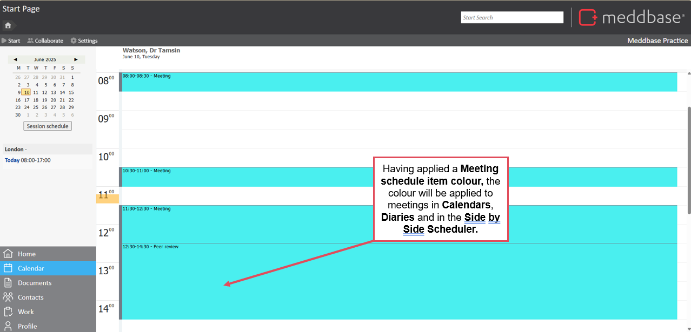